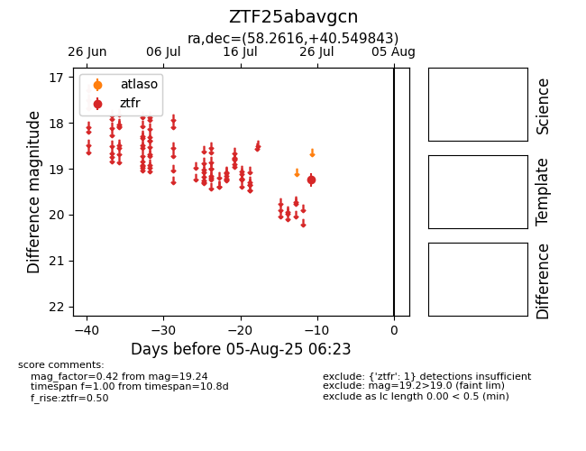

Target ZTF25abavgcn at 2025-08-06 17:45, see:
FINK: fink-portal.org/ZTF25abavgcn
Lasair: lasair-ztf.lsst.ac.uk/objects/ZTF25abavgcn
ALeRCE: alerce.online/object/ZTF25abavgcn
alt names
ZTF25abavgcn (ztf,fink)
coordinates:
equatorial (ra, dec) = (58.2616,+40.54984)
galactic (l, b) = (156.2896,-10.27502)
photometry
last ztfr=19.24
1 ztfr detections
